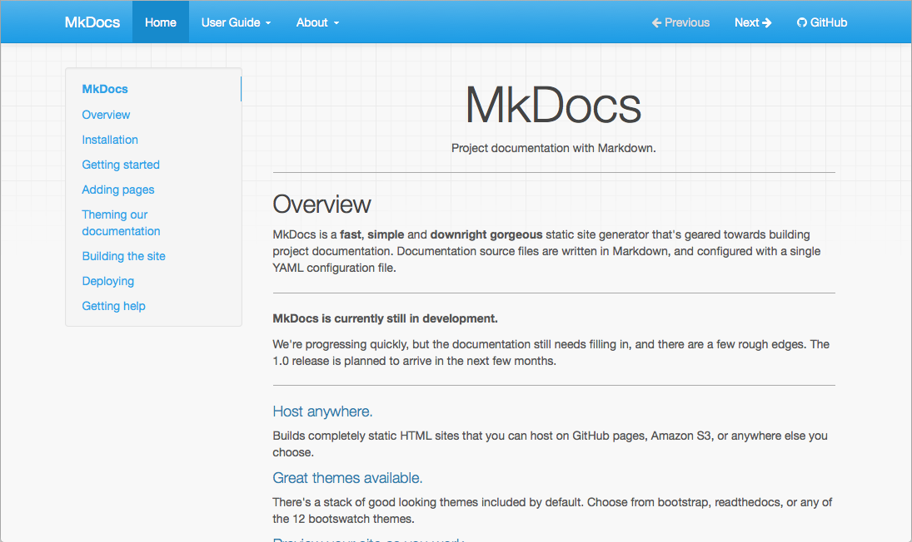

Cài đặt SQL Server Docker
Bước 1: Tạo project
python -m mkdocs new
Bước 2: Cấu hình mkdocs.yml
site_name: Docker & Mkdocs
nav:
- Quick start: index.md
theme:
name: readthedocs
Theme: có hai dạng giao diện hỗ trợ sẵn từ Mkdocs
- mkdocs: 
- readthedocs:
nav: navigation các trang markdown có thể cấu trúc dạng list để liên kết các trang markdown (.md)

Bước 3: Chạy website
python -m mkdocs serve
Bước 4: Kết quả